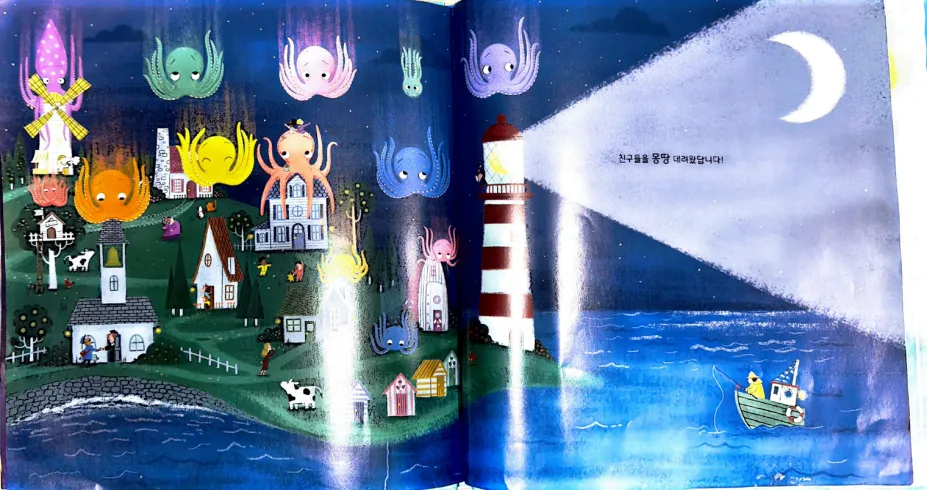

어마어마한 문어가 하늘에서 뚝!
빈칸에 낱말을 쏙!
문장을 읽고, 알맞은 낱말을 넣어 봐요.
천천히, 하나씩.
이야기 속으로
빈칸에 들어갈 낱말은?
손가락이나 펜으로 빈칸에 들어갈 낱말을 써 봐요.
선생님이 손글씨 확인하기
손글씨는 자동 채점하지 않습니다. 글자와 받침을 직접 확인해 주세요.
어려운 문장은 건너뛰어도 괜찮아요. 이전 문장으로 돌아가 다시 풀 수 있어요.

오늘 활동을 마쳤어요!
연습할 낱말을 골라 주세요.
선생님 설정에서 낱말을 추가하거나 다른 낱말 종류를 선택해 주세요.
책 원문 함께 읽기
손가락이나 펜으로 답을 써 봐요.
선생님이 답 확인하기
중심 내용은 뜻이 맞으면 다른 표현도 인정해 주세요. 손글씨와 중심 내용 타이핑은 교사가 확인합니다.
선생님 관찰 메모
낱말 활동 원문 16개 · 이야기 이해 활동 PDF 3~19쪽 · 문장과 낱말의 표기를 유지한 빈칸 활동 · 학생을 선택하면 기록이 저장됩니다. 파일 버전은 연습·인쇄용이며, 기기 간 기록 공유는 게시된 웹주소에서 지원합니다.